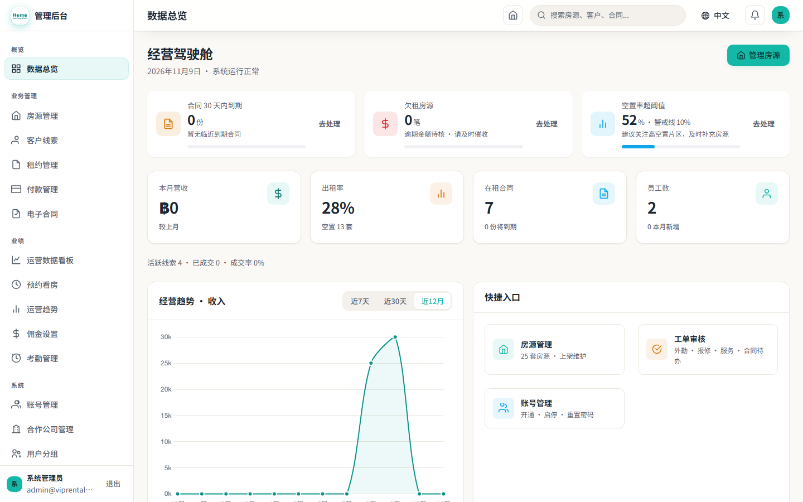
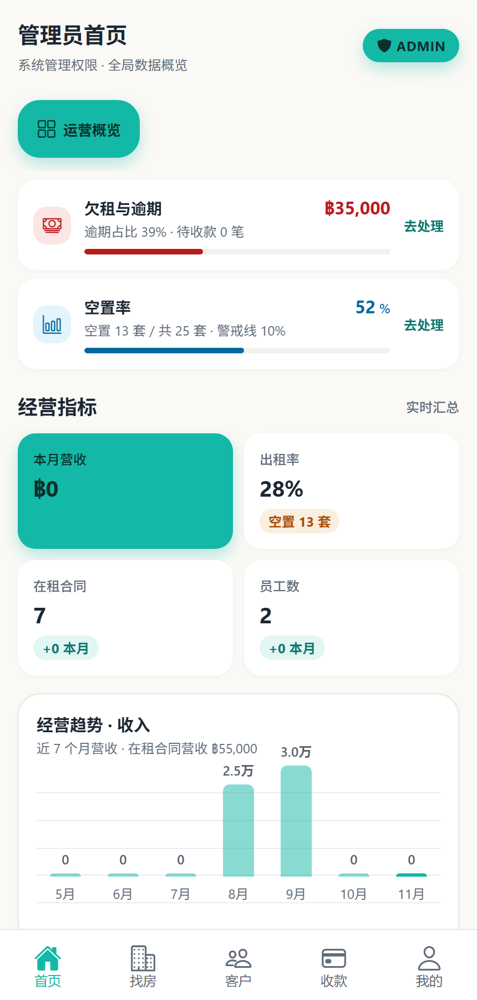
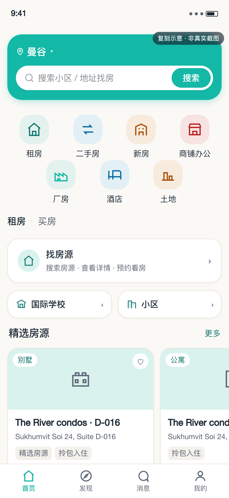

01 · Web 管理端数据总览真实截图 · 1440×900

看什么
「本月营收」KPI 的图标底已变为青绿浅底、图标为深青绿；同屏「员工数」「在租合同」保持青绿体系，「出租率」仍是暖橙、「欠租与逾期」仍是红色，没有被一起改绿或改青。
实测值
图标底 rgba(20,184,166,0.1)；图标 rgb(15,118,110)；同屏员工数图标 rgb(20,184,166)。
02 · App 管理端首页真实截图 · 430×900

看什么
主 KPI「本月营收」整卡仍是主题青绿；下方「+0 本月」增长徽标已由绿色改为青绿浅底 + 深青绿文字；「空置 13 套」仍为暖橙状态色。
实测值
主卡 rgb(20,184,166)；徽标底 rgba(20,184,166,0.12)；徽标文字 rgb(15,118,110)。
03 · 小程序租客首页复刻示意 · 非真实截图

看什么
「厂房」分类图标已从 success 绿改为与其它分类一致的主题青绿浅底 + 青绿线条；Hero 仍是主题青绿 #14b8a6。右上角保留「复刻示意 · 非真实截图」标注。
依据
编译后 index.wxss：.gold-nav__icon--factory{background-color:rgba(var(--primary-rgb),.1)}；编译后 app-origin.wxss：--primary:#14b8a6；icons.ts 的 navFactory SVG stroke 已改为 #14b8a6。